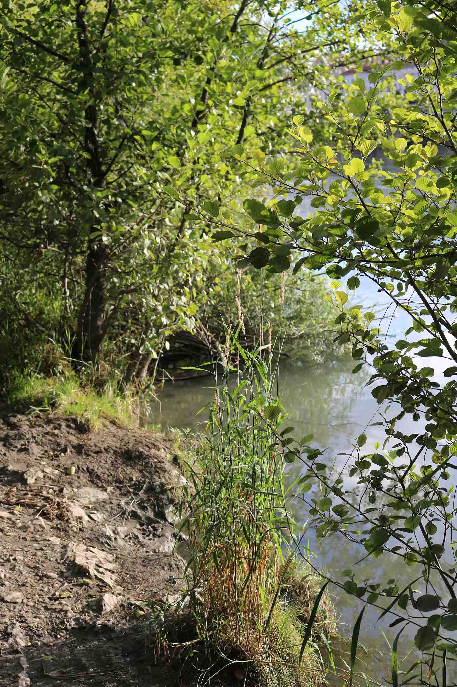

Lieux en extérieur
Les lieux suivant sont des suggestions, les lieux peuvent changer
Berges du Rhône
Sur tout le long des berges du Rhône on peut trouver des endroit plantés. Des shootings interressant peuvent prendre place dans ces micro-clairières urbaines.


Pont Morand – Quai du Rhône
Sur les berges du Rhône, aux abords du pont Morand se trouve un espace public très graphique où espaces verts et graffitis cohabitent. (Lieu de shooting avec Charlotte )
Accès : Métro A - Foch